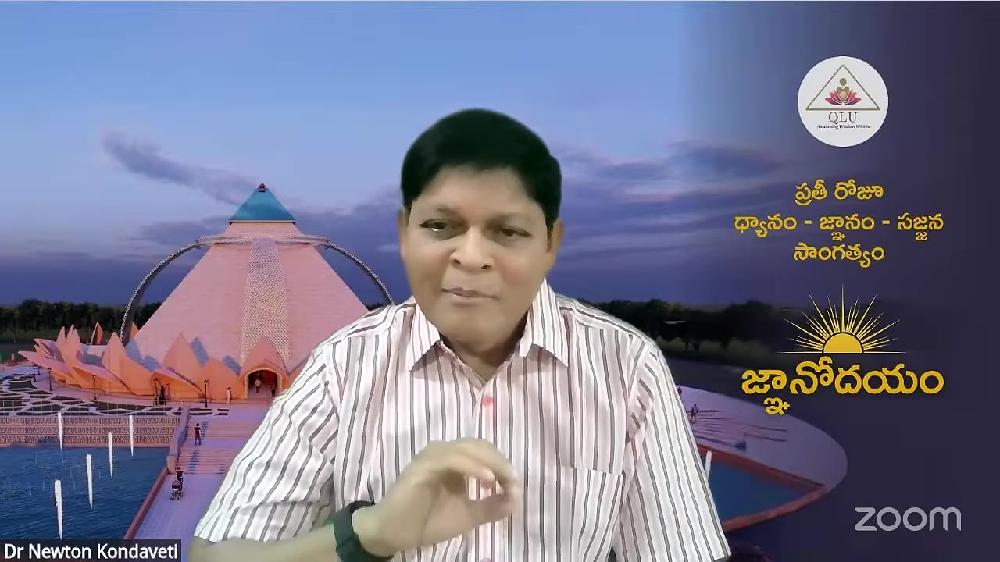

01 · ఈ నెల ఆధ్యాత్మిక జ్ఞానసారం · పూర్తి కథనం
జ్ఞాన స్వీకరణకు తొలి అడుగు — ఖాళీ పాత్రగా మారి శక్తి, చైతన్యాలను అనుభూతి చెందడం
దేవీ నవరాత్రులు అంటే కేవలం పండుగ జరుపుకోవడం కాదు. మనలో నిద్రాణంగా ఉన్న శక్తిని గుర్తించి, దానిని అంతర్ముఖ సాధనలో వినియోగించి, ప్రతి క్షణాన్నీ ఆత్మానందంతో జీవించడం నేర్చుకునే అవకాశం. శక్తి–చైతన్యాల సంబంధం, ఆనందానికి–వేడుకకు మధ్య తేడా, దేవీ సమర్పణ, సంపూర్ణ అంగీకారం, శ్వాసతో కూడిన నమస్కార సాధన — ఇవన్నీ ఈ రోజు మనం తెలుసుకుందాం.
ప్రసంగకర్త: బ్రహ్మర్షి చక్రవర్తి డా. న్యూటన్ కొండవీటి
అంశం: దేవీ నవరాత్రులు — శక్తి, చైతన్యం, సమర్పణ, సంపూర్ణ అంగీకారం
మూల వీడియో: https://www.youtube.com/watch?v=dmLVPT3065I
01. శక్తి, చైతన్యం — సృష్టికి ఆధారమైన రెండు తత్త్వాలు
వండర్ఫుల్ ఫ్రెండ్స్! దేవీ నవరాత్రుల సందర్భంగా ఈ తొమ్మిది రోజుల అంతరార్థాన్ని తెలుసుకోవాలి. అప్పుడే మనం నిజంగా ఈ నవరాత్రులను సెలబ్రేట్ చేసుకోగలం.
ఈ సృష్టి అంతటా శక్తి, చైతన్యం అనే రెండు తత్త్వాలు ఉన్నాయి. శక్తిని పార్వతీమాత, దుర్గాదేవి, ఆదిశక్తి, పరాశక్తి, పరమేశ్వరి అని ఎన్నో పేర్లతో పిలుస్తాం. చైతన్యాన్ని శివుడు, ఈశ్వరుడు, సర్వేశ్వరుడు, సర్వాంతర్యామి, పరమాత్మ అని పిలుస్తాం. పేర్లు ఎన్నో ఉన్నా, మనం తెలుసుకోవలసిన మూలతత్త్వాలు ఇవే.
శక్తి గురించి తెలుసుకోకుండా చైతన్యాన్ని సంపూర్ణంగా అర్థం చేసుకోవడం కష్టం. అందుకే ఈ తొమ్మిది రోజులు శక్తిని తెలుసుకోవడానికి, తెలుసుకోవడమే కాకుండా అనుభూతి చెందడానికి ప్రత్యేకంగా వినియోగించుకుందాం.
ముఖ్యమైన జ్ఞానం: శక్తి ఒకటి, చైతన్యం మరొకటి అని వేర్వేరు పేర్లతో చెప్పుకున్నా, సాధనలో వాటి అనుసంధానాన్ని అనుభవించడమే ప్రధానమైన విషయం.
02. ఎంజాయ్మెంట్ వేరు — సెలబ్రేషన్ వేరు
మనం ఎంజాయ్మెంట్కి, సెలబ్రేషన్కి మధ్య ఉన్న తేడాను గమనించాలి. నాకు ఒకటి కావాలి. అది దొరికితే నేను ఆనందిస్తాను. ఐస్క్రీమ్ కావాలనుకుంటాను; తిన్న తర్వాత ఎంజాయ్ చేశానంటాను. సినిమా చూడాలనుకుంటాను; చూసి ఆనందించానంటాను. ఇక్కడ మొదట ‘నాకు కావాలి’ అనే కోరిక ఉంది. ఆ కోరిక తీరినప్పుడు కలిగే సుఖమే ఎంజాయ్మెంట్.
కానీ సెలబ్రేషన్ అలా కాదు. సెలబ్రేషన్కి ‘నాకు ఇది కావాలి’ అనే షరతు అవసరం లేదు. బయట పరిస్థితులు ఎలా ఉన్నా, మన లోపల నుంచి ఉద్భవించే ఆనందమే సెలబ్రేషన్. ఆత్మచైతన్యం నుంచి వచ్చే ఆనందంతో ప్రతి క్షణాన్నీ అద్భుతంగా జీవించడం సెలబ్రేషన్.
అందుకే ఈ తొమ్మిది రోజులు ఎంజాయ్ చేయడం కోసం కాదు — సెలబ్రేట్ చేసుకోవడం కోసం. పండుగ అంటే బాహ్య వినోదాలు మాత్రమే కాదు. మనలోని పరాశక్తిని అనుభవిస్తూ జీవించడమే నిజమైన వేడుక.
మన జీవితంలో ఏదైనా సమస్య ఎదురవుతుంటే, ఎక్కడో ఒక చోట ఆగిపోయామని అనిపిస్తుంటే, సమాధానాలు దొరకకపోతుంటే — ఈ రోజులను సాధనకు అంకితం చేద్దాం. ఈ సమయంలో శక్తిసాధనకు విశేష ప్రాధాన్యం ఉందని ఆధ్యాత్మిక సంప్రదాయం చెబుతుంది.
03. బాహ్యముఖం నుంచి అంతర్ముఖం వైపు — శక్తి దిశను మార్చుకోవడం
శక్తి బాహ్యంగా వ్యక్తమవుతుంది; అంతర్ముఖంగానూ ప్రవహిస్తుంది. ఈ ప్రవచనంలో బాహ్యముఖ ప్రవృత్తిని పురుషతత్త్వంతో, అంతర్ముఖ ప్రవృత్తిని స్త్రీతత్త్వంతో అనుసంధానిస్తున్నాం. ఇది సాధనకు సంబంధించిన ప్రతీకాత్మక భాష. స్త్రీలు, పురుషులందరూ అంతర్ముఖ సాధన చేయగలరు.
మన శక్తి ఎంతగా బయటికి వెళ్తోందో చూడండి. మాటల ద్వారా, ఆలోచనల ద్వారా, పనుల ద్వారా, అనవసరమైన ఆకర్షణల ద్వారా మనం శక్తిని చెల్లాచెదురు చేసుకుంటున్నాం. ఈ తొమ్మిది రోజులు మాత్రం దిశ మార్చుకుందాం.
శక్తిని బయటికి వెదజల్లకుండా మనలోనే నిలుపుకుందాం. అంతర్ముఖులమవుదాం. ఆ శక్తిని సాధనకు వినియోగిద్దాం. మనలో ఎన్నో రహస్యాలు, ఎన్నో గొప్ప జ్ఞానాలు దాగి ఉన్నాయి. వాటిని అనుభవంలోకి తీసుకురావడానికి శక్తి అవసరం.
మనలో నిద్రాణంగా ఉన్న పరాశక్తిని అనుభూతి చెందడమే ఈ నవరాత్రుల ప్రధాన సాధన.
సాధన సూత్రం: శక్తిని వృథా చేయకుండా, దాని దిశను బాహ్యం నుంచి అంతర్ముఖం వైపు మార్చుకోవాలి.
04. త్రిశక్తులు — ధ్యానం, సేవ, ఆత్మజ్ఞానం
పరాశక్తిని ఎన్నో రూపాల్లో ఆరాధిస్తాం. సరస్వతీమాత, లక్ష్మీమాత, దుర్గామాత, కాళీమాత — పేర్లు, రూపాలు వేర్వేరుగా కనిపించినా, మనం ఆరాధిస్తున్నది ఆ శక్తినే.
ఈ రూపాల ద్వారా మూడు ముఖ్యమైన సాధనలను గుర్తుంచుకుందాం:
- దుర్గా/కాళీ శక్తి — ధ్యానం: అంతర్ముఖంగా వెళ్లి మనలోని శక్తిని అనుభవించడం.
- లక్ష్మీ శక్తి — సేవ: మన శక్తిని ఇతరుల మేలు కోసం వినియోగించడం.
- సరస్వతీ శక్తి — ఆత్మజ్ఞానం: మన అసలు స్వరూపాన్ని తెలుసుకోవడం.
ధ్యానం, సేవ, ఆత్మజ్ఞానం — ఈ మూడే త్రిశక్తుల సాధన. ఆధ్యాత్మికంగా ఒక స్థాయిలో నిలిచిపోయామని అనిపించే వారికి తదుపరి స్థాయికి వెళ్లడానికి ఈ మూడు ఎంతో ఉపయోగపడతాయి.
కొన్ని బీజాక్షరాల గురించి కూడా మన సంప్రదాయంలో చెబుతారు. అవి దేవతాశక్తులతో అనుసంధానానికి ఉపయోగించే శబ్దప్రతీకలు. అయితే ఏ బీజాక్షరాన్ని ఏ రూపానికి కచ్చితంగా అనుసంధానించాలో ఈ భాగంలోని స్వయంచాలక శీర్షికలలో స్పష్టత లేనందున ఇక్కడ నిర్దిష్ట జాబితా ఇవ్వడం లేదు.
05. దేవీ సమర్పణ — అందరిలో అమ్మనే చూడడం
ఈ తొమ్మిది రోజులు దేవీ సమర్పణ భావంతో జీవిద్దాం. మనం చేసే ప్రతి పనిలో మనతో మనం అనుసంధానమై ఉండాలి. అందరిలోనూ ఆ జగన్మాతనే చూడాలి.
అద్దంలో మనల్ని మనం చూసుకున్నా అమ్మనే దర్శించుకోవాలి. మనం కలిసే ప్రతి వ్యక్తిలోనూ అమ్మను చూడాలి. స్త్రీ అయినా, పురుషుడైనా — ప్రతి ఒక్కరిలో ఆ పరాశక్తి వ్యక్తమై ఉందనే భావనను అలవాటు చేసుకోవాలి.
ఇది కేవలం ఎవరినైనా ‘అమ్మా’ అని పిలవడం కాదు. మన దృష్టి మారాలి. మన ఎదుట ఉన్న వ్యక్తిని కేవలం పేరుతో, రూపంతో, పాత్రతో చూడకుండా ఆ శక్తి వ్యక్తీకరణగా చూడాలి. ప్రతి చెట్టులో, ప్రతి జంతువులో, ప్రకృతిలో, పంచమహాభూతాలలో కూడా ఆ జగన్మాతను దర్శించుకునే భావనను పెంపొందించుకోవాలి.
06. శివశక్తుల సంకేతం — చైతన్యానికి శక్తి అవసరం
శివుడు చైతన్యానికి సంకేతం. శక్తి లేకపోతే శివుడు కూడా శవంతో సమానం అని సంప్రదాయంలో చెప్పే మాటలో ఒక అంతరార్థం ఉంది. శక్తి లేకుండా వ్యక్తీకరణ లేదు. అందుకే శక్తిని ముందుగా తెలుసుకోవాలి.
మహిషాసురమర్దిని రూపానికి సంబంధించిన కథలో దేవి అసురులను సంహరిస్తూ ఉగ్రశక్తిగా వ్యక్తమవుతుంది. ఆ శక్తిని శాంతింపజేయడానికి శివుడు ఆమె పాదాల కింద పడుకున్నట్లు కథ చెబుతుంది. ఆమె పాదం శివుని హృదయాన్ని తాకగానే ఎరుక కలుగుతుంది.
శక్తి, చైతన్యం పరస్పర సంబంధాన్ని గుర్తుచేసే సంకేతంగా ఈ కథను అర్థం చేసుకుందాం. కథలోని బాహ్య సంఘటనల వెనుక ఉన్న ఆధ్యాత్మిక భావాన్ని తెలుసుకోవాలి.
07. అమ్మ ఉనికిని అనుభవించడం — Presence
మన తల్లిదండ్రులతో గడిపిన మధుర క్షణాలను గుర్తుచేసుకోండి. వారు మన ఎదుట లేకపోయినా, వారితో ఏర్పడిన అనుబంధం వల్ల వారి ఉనికిని మన హృదయంలో అనుభవించగలం. జ్ఞాపకాల్లో వారి సాన్నిధ్యం నిలిచి ఉంటుంది.
అలాగే ఈ తొమ్మిది రోజులు ఆదిశక్తి ఉనికిని — Presence — అనుభవించాలి. భౌతికంగా మనకు తల్లిదండ్రులు ఉన్నట్లే, ఆధ్యాత్మికంగా శక్తిని తల్లిగా, చైతన్యాన్ని తండ్రిగా భావిద్దాం.
నిర్గుణం, నిరాకారం అయిన శక్తికి ఋషులు, యోగులు అనేక నామరూపాలను ఇచ్చారు. ఆ రూపాలు మనకు అనుసంధానానికి సహాయపడతాయి. అయితే రూపానికే పరిమితం కాకూడదు. మొదట అమ్మను మనకు వేరుగా భావించి ఆరాధిస్తాం; సాధనలో ముందుకు వెళ్లేకొద్దీ ఆ శక్తి మనకు వేరుకాదనే అనుభూతి వైపు ప్రయాణిస్తాం.
గుర్తుంచుకోండి: రూపం ద్వారా అనుసంధానం ప్రారంభమవుతుంది; సాధన ద్వారా ఆ శక్తి సాన్నిధ్యాన్ని అనుభవించడం ముఖ్యమవుతుంది.
08. లక్ష్మీముద్ర — అంతర్ముఖతకు సంకేతంగా కూర్చోవడం
ఈ తొమ్మిది రోజులు కూర్చునే విధానంలోనూ ఒక సంకేతాన్ని పాటిద్దాం. ఎడమ కాలు కుడి కాలి పైన, ఎడమ చేయి కుడి చేయి పైన ఉండేలా కూర్చోవడాన్ని ఇక్కడ లక్ష్మీముద్ర భావంతో వివరిస్తున్నాం.
ఇది శక్తితత్త్వానికి ప్రాధాన్యం ఇస్తున్నామనే గుర్తు. బాహ్యంలోకి శక్తిని చెల్లాచెదురు చేయకుండా, మనలోకి తీసుకురావాలనే సంకల్పాన్ని గుర్తుచేసే ప్రతీక.
మనకు ఎన్నో ఆధ్యాత్మిక లక్ష్యాలు ఉంటాయి: ఆజ్ఞాచక్ర స్థితిని తెలుసుకోవాలి, సహస్రార స్థితిని పొందాలి, మోక్షజ్ఞానాన్ని అనుభవించాలి, కర్మభారాన్ని విడిచిపెట్టాలి. కానీ ప్రయత్నం లేకుండా కేవలం కోరుకోవడం వల్ల ముందుకు వెళ్లలేం. ‘ఎక్కడ వేసిన గొంగళి అక్కడే’ అన్నట్లుగా ఉండిపోకూడదు. సాధనలో పురోగతికి మన శక్తిని సరిగ్గా వినియోగించుకోవాలి.
09. సంపూర్ణ అంగీకారం — Total Acceptance
ఈ తొమ్మిది రోజుల్లో మరో ముఖ్యమైన సాధన టోటల్ యాక్సెప్టెన్స్ — సంపూర్ణ అంగీకారం.
మన జీవితంలో కొన్ని విషయాలు మనకు ఇష్టంగా ఉంటాయి; కొన్ని ఇష్టంగా ఉండవు. తీపి పదార్థాలు ఇష్టమవుతాయి. కాకరకాయ చేదుగా ఉంటుందని దాన్ని తిరస్కరించాలనిపిస్తుంది. అలాగే మనుషుల్లోనూ తియ్యగా మాట్లాడేవారు ఉంటారు; మనకు చేదుగా అనిపించే స్వభావం ఉన్నవారూ ఉంటారు.
అయితే మనం వారిని వారుగా అంగీకరించడం నేర్చుకోవాలి. ‘వీళ్లు ఇలా మారాలి; వాళ్లు అలా ఉండాలి’ అనే అంచనాలను తగ్గించుకోవాలి. మనల్ని మనం కూడా ఉన్న స్థితిలో అంగీకరించుకోవాలి.
మనం ఇప్పుడు ఏ స్థితిలో ఉన్నామో దాన్ని గుర్తించి అంగీకరించినప్పుడే మరో స్థితికి వెళ్లగలం. అంగీకారం అంటే సాధనను ఆపేయడం కాదు. వాస్తవాన్ని తిరస్కరించకుండా అక్కడి నుంచి ముందుకు సాగడం.
ఒకసారి రాసుకోండి: నా జీవితంలో నేను అంగీకరించలేకపోతున్న పరిస్థితులు ఏమిటి? ఏ వ్యక్తుల గురించి నాకు నిరంతరం అంచనాలు ఉన్నాయి? నా గురించి నేనే ఏ విషయాన్ని తిరస్కరిస్తున్నాను?
ఉదయం లేచినప్పటి నుంచి రాత్రి పడుకునే వరకు అంగీకారాన్ని సాధన చేద్దాం. అప్పుడు జీవితం ఒక నిరంతర వేడుకగా మారుతుంది.
10. దసరా — సరదాగా, ఆత్మానందంతో జీవించడం
‘దసరా’ అనే పేరును సరదాగా తిరగేసి ‘శారదా’ అని చెప్పుకుంటూ, జీవితాన్ని సరదాగా జీవించాలనే భావాన్ని గుర్తుచేసుకుందాం. ఇక్కడ ముఖ్యమైనది పదవ్యుత్పత్తి కాదు; ప్రతి క్షణాన్ని వేడుకగా జీవించాలనే సందేశం.
సెలబ్రేషన్కి బాహ్య వస్తువులు అవసరం లేదు. కోరిక తీర్చుకోవడమే ఆనందం అని భావించకండి. మనం శరీరానికి మాత్రమే పరిమితమైనవాళ్లం కాదు. ఆత్మానందం నుంచి వచ్చే వేడుకను తెలుసుకుందాం.
11. ఎరుపు, తెలుపు — శక్తి ఆరాధనలోని సంకేతాలు
దేవీ ఆరాధనలో ఎరుపు రంగు ప్రత్యేకంగా కనిపిస్తుంది. కుంకుమ, వస్త్రాలు, పూజా అలంకరణల్లో ఎరుపు ఉంటుంది. ఈ ప్రవచనంలో ఎరుపును చైతన్యవంతంగా వ్యక్తమయ్యే డైనమిక్ శక్తికి సంకేతంగా చెబుతున్నాం. తెలుపు–ఎరుపు రంగులను కూడా దేవీ ఆరాధనలో ప్రతీకలుగా ఉపయోగిస్తాం.
ఈ సంకేతాలను కేవలం బాహ్య అలంకరణగా చూడకండి. మన ఋషులు పురాణాల్లో, కథల్లో, ఆచారాల్లో జ్ఞానాన్ని ప్రతీకాత్మకంగా పొందుపరిచారు. పండుగకు రెండు ప్రయోజనాలు ఉన్నాయి: వేడుక చేసుకోవడం; జ్ఞానం తెలుసుకొని సాధన చేయడం.
12. చంద్రనాడి, సూర్యనాడి, సుషుమ్న — శ్వాసపై అవగాహన
మన శ్వాస రెండు నాసికారంధ్రాల ద్వారా ఒకే విధంగా ఉండకపోవచ్చు; ఒక సమయంలో ఒక వైపు ప్రవాహం ఎక్కువగా అనిపించవచ్చు. యోగ సంప్రదాయంలో ఎడమ నాసికారంధ్రాన్ని చంద్రనాడితో, కుడి నాసికారంధ్రాన్ని సూర్యనాడితో అనుసంధానిస్తారు.
ఈ ప్రవచనంలో చంద్రనాడిని శక్తి, అంతర్ముఖతతో; సూర్యనాడిని బాహ్య క్రియాశీలతతో అనుసంధానిస్తున్నాం. ధ్యానంలో రెండు వైపులా శ్వాస సమంగా అనిపించే స్థితిని సుషుమ్న నాడితో, శక్తి ఊర్ధ్వముఖ ప్రయాణంతో ప్రతీకాత్మకంగా వివరిస్తున్నాం. ఇవి యోగ సంప్రదాయ వివరణలు; శరీర నిర్మాణశాస్త్ర నిర్ధారణలుగా చూడకూడదు.
ఇప్పుడు ఈ భావాన్ని దేవీ సమర్పణ సాధనతో కలుపుకుందాం.
13. శిరస్సు వంచడం — అహంకారాన్ని సమర్పించడం
మన సంస్కృతిలో పెద్దలకు, తల్లిదండ్రులకు, దేవతలకు శిరస్సు వంచి నమస్కరిస్తాం. దేవాలయంలో గర్భగుడికి దగ్గరగా వెళ్లేకొద్దీ కొన్ని ద్వారాలు చిన్నవిగా ఉండి తలవంచి ప్రవేశించాల్సి వస్తుంది. దానిని కూడా ఒక సంకేతంగా చూడవచ్చు.
‘తలకెక్కింది’, ‘తలపొగరు’ అనే మాటల్లో అహంకారాన్ని తలతో అనుసంధానిస్తాం. డబ్బు, హోదా, అధికారం వచ్చినప్పుడు అహంకారం పెరగవచ్చు. శిరస్సు వంచడం అంటే అహంభావాన్ని తగ్గించుకోవడం.
మన భౌతిక జీవితాన్ని ఇచ్చిన తల్లిదండ్రులకు నమస్కరిస్తాం. అలాగే సృష్టికి మూలమైన జగన్మాత శక్తికి కూడా సమర్పణ భావంతో నమస్కరిద్దాం.
14. దేవీ సమర్పణ శ్వాస–నమస్కార సాధన
ఈరోజు ఒక ప్రత్యేకమైన సాధనను నేర్చుకుందాం. దాని ఉద్దేశం యాంత్రికంగా శరీరాన్ని వంచడం కాదు; ‘నా అహంకారాన్ని, నా సమస్యలను, నా సంకల్పాలను జగన్మాత పాదాల చెంత సమర్పిస్తున్నాను’ అనే భావాన్ని పెంపొందించుకోవడం.
సాధనలో చెప్పబడిన క్రమం
- సౌకర్యంగా కూర్చోండి. కుర్చీలో కూర్చుంటే కూడా శరీరానికి అనుకూలంగా ఉండే భంగిమను ఎంచుకోండి. లక్ష్మీముద్ర భావాన్ని గుర్తుచేసుకోవచ్చు.
- కుడిచేతితో విష్ణుముద్ర వేసి, కుడి నాసికారంధ్రాన్ని సున్నితంగా మూసే విధానాన్ని చూపించారు.
- ఎడమ నాసికారంధ్రం ద్వారా తొమ్మిది చిన్న దశల్లో శ్వాస లోపలికి తీసుకోవడం ప్రవచనంలో ప్రదర్శించారు. ఇది ఒక ప్రత్యేక ప్రాణాయామ పద్ధతి; సాధారణ శ్వాసతో సమానం కాదు.
- ఆ తరువాత చేతులను నమస్కారముద్రలో ఉంచి, శ్వాసను విడిచే క్రమంలో శిరస్సును నిదానంగా వంచి దేవీ సమర్పణ భావాన్ని కలిగించుకోవాలని సూచించారు.
- వంగిన స్థితిలో తొమ్మిది అంకెలు లెక్కపెట్టడం లేదా ‘శ్రీం’ అనే బీజాక్షరాన్ని బయటకు గట్టిగా పలకకుండా మనసులో స్మరించడం చెప్పారు.
- నిదానంగా తిరిగి పైకి రావాలి. ఈ విధంగా తొమ్మిది చక్రాలు చేయడాన్ని ప్రదర్శించారు. ఉదయం, వీలైతే సాయంత్రం కూడా చేయాలని చెప్పారు.
ముఖ్యమైన భద్రతా గమనిక: ప్రసంగంలో శ్వాసను నిలిపే కుంభకం, శ్వాస విడిచిన తర్వాత నిలిపే బాహ్యకుంభకం, తలను వంచడం వంటి అంశాలు కూడా ఉన్నాయి. ఇవి అందరికీ తగినవి కావు. ముఖ్యంగా మెడ/వెన్నెముక సమస్యలు, తలతిరుగుడు, శ్వాస లేదా హృదయ సంబంధ సమస్యలు ఉన్నవారు ప్రత్యక్షంగా అర్హత కలిగిన ఉపాధ్యాయుడు/వైద్యుడి మార్గదర్శకత్వం లేకుండా ఈ శ్వాసనిలుపు పద్ధతిని ప్రయత్నించకూడదు. సమర్పణ భావాన్ని సాధారణ, సహజ శ్వాసతో సౌకర్యంగా కూర్చొని కూడా ఆచరించవచ్చు.
తొమ్మిది చక్రాల్లో సమర్పణ భావం
సాధనను మార్గదర్శనం చేస్తూ, ప్రతి చక్రంలో శిరస్సు వంచి ‘శరణు, శరణు’ అనే భావంతో ఉండమని చెప్పారు. మనం పరిష్కరించలేకపోతున్న సమస్యలు, జీవితంలో దాటలేకపోతున్న అడ్డంకులు, ఆధ్యాత్మికంగా ఎదగాలనే సంకల్పాలు — అన్నింటినీ ఆ శక్తికి సమర్పించుకోవాలని గుర్తుచేశారు.
చివరి చక్రాన్ని స్వయంగా, సూచనలు లేకుండా, పూర్తి ఎరుకతో చేయమన్నారు. సాధనలో ముఖ్యమైనది సంఖ్య మాత్రమే కాదు — సమర్పణ భావం.
15. రోజంతా జగన్మాత సాన్నిధ్యాన్ని గుర్తుంచుకోవడం
ఉదయం ధ్యానం చేసిన తరువాత సమర్పణ భావంతో రోజును ప్రారంభిద్దాం. ఆ తరువాత రోజంతా అమ్మ సాన్నిధ్యాన్ని గుర్తుంచుకుందాం. ఎవరిని చూసినా ఆ శక్తినే చూడాలి.
ఈ తొమ్మిది రోజులు ప్రత్యేకంగా మాతృశక్తితో అనుబంధాన్ని పెంపొందించుకోవాలని చెప్పారు. శివుని లేదా చైతన్యాన్ని తక్కువ చేయడం కాదు; ముందుగా శక్తితో అనుసంధానం ఏర్పరచుకోవడం ఈ సాధన ఉద్దేశం.
సాధన సరిగా జరిగితే విజయదశమి నాటికి ఆధ్యాత్మికంగా మరో స్థితికి చేరుకోవచ్చనే ఆశయాన్ని వ్యక్తం చేశారు. మన పురోగతిని బయట అద్భుతాలతో కొలవకుండా, అంతర్ముఖత, అంగీకారం, సమర్పణ, ఆనందంలో వచ్చే మార్పులతో పరిశీలించుకుందాం.
16. రోజువారీ సాధన — మనం గుర్తుంచుకోవలసిన అంశాలు
- దేవీ సమర్పణ: మనలోని శక్తికి అహంభావాన్ని సమర్పించడం.
- Presence: మనలోనూ, ఇతరుల్లోనూ జగన్మాత సాన్నిధ్యాన్ని గుర్తుచేసుకోవడం.
- లక్ష్మీముద్ర భావం: బాహ్యముఖత నుంచి అంతర్ముఖత వైపు శక్తి దిశను మార్చుకోవడం.
- Total Acceptance: వ్యక్తులను, పరిస్థితులను, మన ప్రస్తుత స్థితిని అంగీకరించడం.
- Celebration: కోరిక తీరినప్పుడే కాకుండా ప్రతి క్షణాన్నీ ఆత్మానందంతో జీవించడం.
- ధ్యానం–సేవ–ఆత్మజ్ఞానం: త్రిశక్తుల సాధనను జీవితంలో ఆచరించడం.
17. పాల్గొన్నవారి అనుభవాలు, ప్రశ్నలు — సమాధానాలు
కృష్ణకుమారి గారి అనుభవం — ధ్యానం, రోజువారీ జీవితం, మిద్దెతోట
విజయనగరానికి చెందిన కృష్ణకుమారి గారు తమ అనుభవాన్ని పంచుకున్నారు. మూడు సంవత్సరాల క్రితం తాము డిప్రెషన్ను ఎదుర్కొన్నామని, కొంతకాలం మందులు తీసుకున్నామని చెప్పారు. భాను గారి ద్వారా ధ్యానం గురించి తెలుసుకుని, జ్ఞానోదయం తరగతులను అనుసరించడం మొదలుపెట్టారు. హారిక గారి మార్గదర్శకత్వంలో గ్రౌండింగ్ మెడిటేషన్, ఇతర సాధనలు చేస్తూ రోజువారీ పనుల్లో మళ్లీ చురుకుగా పాల్గొంటున్నానని వివరించారు.
తాము మందులు ఆపినట్లు కూడా వ్యక్తిగత అనుభవంగా చెప్పారు. ఇది పాల్గొన్న వ్యక్తి అనుభవం మాత్రమే; డిప్రెషన్ చికిత్సను స్వయంగా ఆపాలని సూచన కాదు.
సమాధానంలో, ఆమె మిద్దెతోటను, పూలమొక్కలతో గడుపుతున్న సమయాన్ని అభినందించారు. ప్రకృతితో, మొక్కలతో అనుబంధాన్ని జగన్మాతతో అనుసంధానంగా చూడాలని చెప్పారు. అప్పట్లో నవంబరులో రాజమండ్రి, విశాఖపట్నం, విజయనగరం ప్రాంతాల్లో కార్యక్రమాలు నిర్వహించే ప్రణాళికను కూడా ప్రస్తావించారు.
విక్రమ్ గారి ప్రశ్న — అంగీకారం, బాధ్యతాభారం, ఆరోగ్య నిర్ణయాలు
విక్రమ్ గారు ఫ్యామిలీ కాన్స్టెలేషన్ ప్రక్రియ తర్వాత తమ కుటుంబ సమస్యలో మార్పు మొదలైందని చెప్పారు. “What is in the way is the way” అనే బోధనను గుర్తుంచుకుంటున్నానన్నారు. అయితే చాలా సంవత్సరాలుగా శరీరంలో ఇన్ఫ్లమేషన్, భుజం నొప్పి ఉన్నాయని, ఇటీవల హేమరాయిడ్స్ కోసం లేజర్ శస్త్రచికిత్స సూచించారని వివరించారు. ఇతరుల భావోద్వేగాలకు అతిగా బాధ్యత తీసుకోవడమే కారణమేమో అని తాము ఆలోచిస్తున్నానన్నారు. శస్త్రచికిత్స చేయించుకోవాలా, ధ్యానంతోనే కొనసాగాలా అని అడిగారు.
సమాధానంలో, తెలుసుకున్న జ్ఞానాన్ని ఆచరణలో పెట్టినప్పుడే మార్పు కనిపిస్తుందని చెప్పారు. శరీరంలో అనుభవించే భారాన్ని, మనసులో మోస్తున్న భావోద్వేగాలను గమనించి, పరిమిత నమ్మకాలను విడిచిపెట్టే దిశగా ధ్యానాన్ని ఉపయోగించుకోవాలని సూచించారు. శరీర సమస్యల వెనుక భావోద్వేగ కారణాలు ఉంటాయనే ఒక ఆధ్యాత్మిక వివరణను కూడా ప్రతిపాదించారు; హేమరాయిడ్స్ను identity conflict లేదా రక్తసంబంధ సమస్యలతో అనుసంధానించారు.
వైద్యపరమైన స్పష్టీకరణ: హేమరాయిడ్స్, ఇన్ఫ్లమేషన్ లేదా భుజం నొప్పికి నిర్దిష్ట భావోద్వేగమే కారణమని వైద్యశాస్త్రం నిర్ధారించలేదు. ఈ వివరణను ప్రవచనంలోని ఆధ్యాత్మిక అభిప్రాయంగానే చూడాలి. శస్త్రచికిత్స అవసరమా అనే నిర్ణయం సంబంధిత వైద్యునితో చర్చించి తీసుకోవాలి; ధ్యానం వైద్యచికిత్సకు ప్రత్యామ్నాయం కాదు.
తదుపరి, నిర్ణయాలు తీసుకునే ముందు ధ్యానస్థితిలో అంతరంగాన్ని ప్రశ్నించుకోవాలని చెప్పారు. అంతఃప్రజ్ఞ ద్వారా స్పష్టతను పొందవచ్చనే సాధనా దృష్టిని పంచుకున్నారు. ఆత్మపరిశీలన మన నిర్ణయాలకు తోడ్పడవచ్చు; వైద్య ఆధారాలను మాత్రం భర్తీ చేయదు.
నరేష్ గారి ప్రశ్న — అష్టాదశ శక్తిపీఠాలు
నరేష్ గారు ఏడేళ్లుగా ధ్యానం చేస్తున్నప్పటికీ క్రమబద్ధత తక్కువగా ఉండేదని, ఇటీవల జ్ఞానోదయం తరగతులకు హాజరవుతున్నానని చెప్పారు. శ్వాస మహావిద్య తరగతులు విన్నానని, ఈ రోజు జగన్మాతకు ప్రణామం చేసే విధానాన్ని నేర్చుకున్నానని తెలిపారు. అష్టాదశ శక్తిపీఠాల గురించి వివరించమని అడిగారు.
సమాధానంలో, శక్తిపీఠాలు ఎంతో పురాతనమైన ఆధ్యాత్మిక క్షేత్రాలని, తరతరాలుగా అక్కడ జరిగే సాధనల వల్ల ఆ ప్రదేశాలకు ప్రత్యేక ప్రాధాన్యం ఏర్పడిందని వివరించారు. ఆ క్షేత్రాల్లో ధ్యానం చేసిన అనుభవాన్ని ప్రస్తావించారు. అంశం విస్తృతమైనది కాబట్టి మిగిలిన నవరాత్రి తరగతుల్లో ఒకరోజు ప్రత్యేకంగా చర్చిద్దామని చెప్పారు. ఈ రోజే శక్తిపీఠాలన్నింటినీ వివరించలేదు — ఈ విషయం స్పష్టంగా గుర్తుంచుకోవాలి.
18. మహిషాసురమర్దిని స్తోత్రం — ధ్యానంతో ముగింపు
ప్రశ్నోత్తరాల అనంతరం మహిషాసురమర్దిని స్తోత్రాన్ని వినిపించాలని కోరారు. కళ్లను మూసుకుని ధ్యానస్థితిలో వినవచ్చని సూచించారు. ఆ తరువాత స్తోత్రగానం జరిగింది.
సంపాదకీయ గమనిక: మూల శీర్షికల్లో స్తోత్రంలోని అనేక సంస్కృత పదాలు తప్పుగా గుర్తించబడ్డాయి. అందువల్ల ఈ సంచికలో తప్పులున్న శ్లోకాలను యథాతథంగా పునర్ముద్రించకుండా, ‘మహిషాసురమర్దిని స్తోత్రగానం జరిగింది’ అని మాత్రమే నమోదు చేస్తున్నాం. ఖచ్చితమైన శ్లోకపాఠం అవసరమైతే ప్రామాణిక పాఠంతో విడిగా పరిశీలించాలి.
ఈ రోజు సాధనలోని ప్రధాన సందేశం
శక్తిని తెలుసుకోండి. బాహ్యంలో చెల్లాచెదురయ్యే శక్తిని అంతర్ముఖం చేసుకోండి. ధ్యానం, సేవ, ఆత్మజ్ఞానాన్ని ఆచరించండి. అందరిలోనూ జగన్మాతను దర్శించండి. అంచనాలను తగ్గించి, జీవితాన్ని సంపూర్ణంగా అంగీకరించండి. అహంకారాన్ని సమర్పించి, ప్రతి క్షణాన్నీ వేడుకగా జీవించండి.